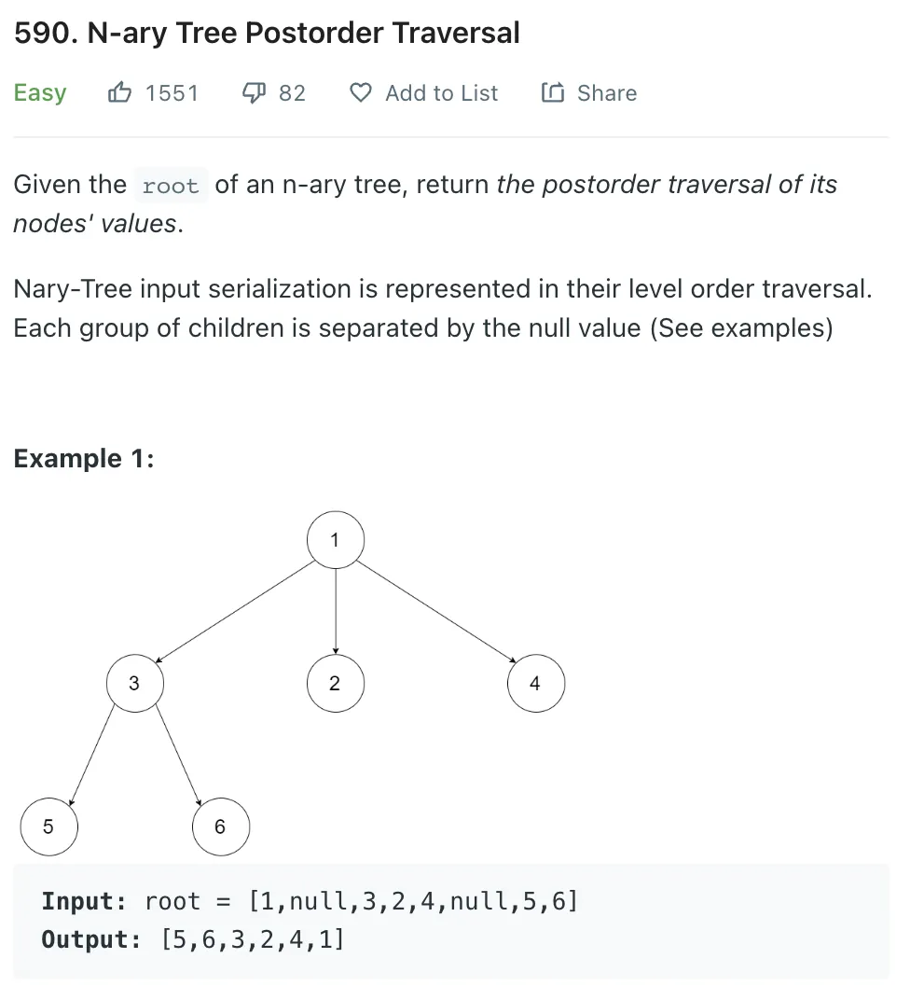
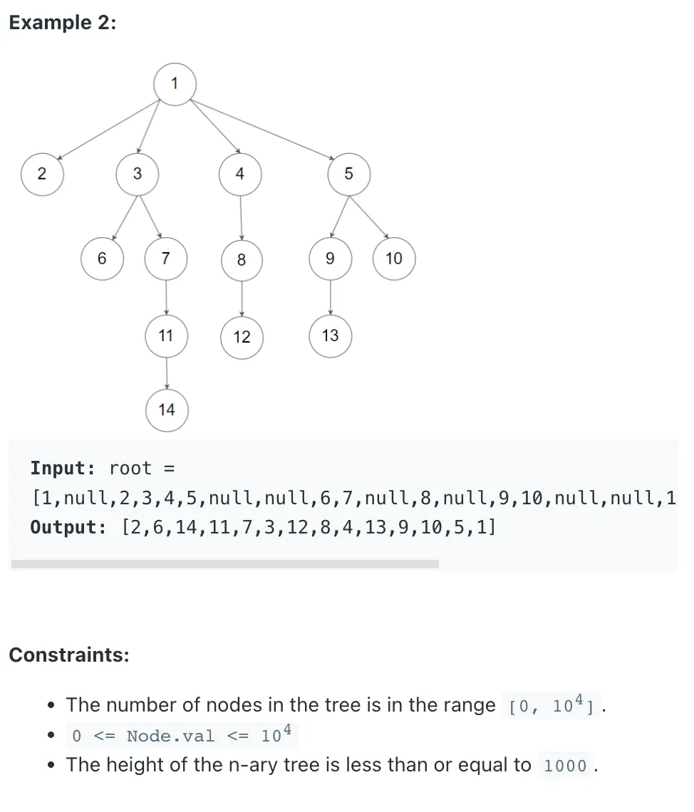

590. N-ary Tree Postorder Traversal
Question


✍🏽 My Solution
Runtime: 0 ms, faster than 100.00% of Java online submissions for N-ary Tree Postorder Traversal. Memory Usage: 43.1 MB, less than 88.58% of Java online submissions for N-ary Tree Postorder Traversal.
class Solution {
List<Integer> result = new ArrayList<>();
public List<Integer> postorder(Node root) {
postorder_r(root);
return result;
}
private void postorder_r(Node root) {
if (root == null) return;
for (Node node : root.children) {
postorder_r(node);
}
result.add(root.val);
}
}
🧠 Thought Process
- What is the time/space complexity of my solution? How do I know?
- time:
- space: